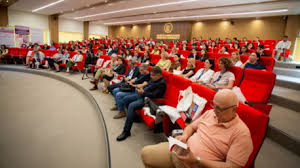
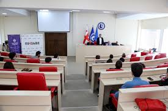
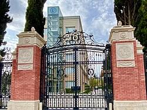
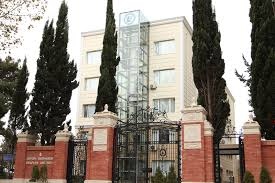
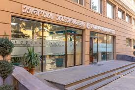

ევროპის უნივერსიტეტი არის ევროპულ ღირებულებებზე დაფუძნებული, ახალგაზრდა, მზარდი და განვითარებაზე ორიენტირებული უმაღლესი საგანმანათლებლო დაწესებულება, რომელიც 2012 წელს დაარსდა. ამჟამად, უნივერსიტეტის მფლობელობაშია ხუთი სასწავლო კორპუსი და თანამედროვე სტანდარტების საერთო საცხოვრებელი, რომელიც ემსახურება სწავლების სხვადასხვა საფეხურზე მყოფ 4000-ზე მეტ სტუდენტს. უნივერსიტეტში ასევე ფუნქციონირებს ინოვაციური სწავლების პრინციპებზე აგებული ხუთი ფაკულტეტი:
სამართლის, ჰუმანიტარულ და სოციალურ მეცნიერებათა ფაკულტეტი – დარგის წამყვანი სპეციალისტების მიერ მიწოდებული ცოდნა ფაკულტეტის კურსდამთავრებულებს ხდის დასაქმების ბაზრისთვის შესაბამის და მოთხოვნად კადრად. სამართლებრივი დახმარების ცენტრი საშუალებას აძლევს სტუდენტებს იმუშაონ რეალურ სამართლებრივ დავებზე და პროფესიონალი იურისტების ზედამხედველობის ქვეშ გაუწიონ უფასო იურიდიული დახმარება მოქალაქეებს.
ბიზნესისა და ტექნოლოგიების ფაკულტეტი – ფაკულტეტი გამოირჩევა საერთაშორისო თანამშრომლობით და ისეთ ორგანიზაციებთან მჭიდრო კონტაქტშია, როგორებიცაა Harvard Business Publishing; ფაკულტეტის ბაზაზე ფუნქციონირებს ტექნოლოგიური ლაბორატორია "EU Lab" სადაც სტუდენტები თეორიულ ცოდნას ასახავენ პრაქტიკაში.
მედიცინის ფაკულტეტი – ფაკულტეტს აქვს თანამედროვე სტანდარტების შესაბამისი ლაბორატორიები, ხოლო სტუდენტებს პრაქტიკის გავლა შესაბამისი პროფილის ორგანიზაციებში შეუძლიათ. Მედიცინის ფაკულტეტი, რომელიც უნივერსიტეტში 2014 წლიდან ფუნქციონირებს, გამოირჩევა 40-მდე კლინიკური ბაზის არსებობით. Სტუდენტებს ასევე პრაქტიკის გავლა შეუძლიათ ჯოენის საუნივერსიტეტო კლინიკაში, რომელიც ევროპის უნივერსიტეტის საკუთრებაშია. გარდა ამისა, სტუდენტები პრაქტიკების გადიან ევროპის წამყვან ქვეყნებში, როგორიცაა გერმანია, ესპანეთი და ა.შ.
სტომატოლოგიის ფაკულტეტი – სტომატოლოგიის ფაკულტეტი განსაკუთრებულია ულტრათანამედროვე ტექნიკური აჭღურვილობით და საერთაშორისო კავშირებით. უნივერსიტეტს აქვს საკუთარი კლინიკა "EU Dent" სადაც სტუდენტები გადიან პრაქტიკებს და აქვთ დასაქმების პერსპექტივა. სტომატოლოგიის ფაკულტეტის სტუდენტები უნივერსიტეტის სრული დაფინანსებით საზღვარგარეთ გადიან კლინიკურ პრაქტიკებს თავიანთი პროფილის შესაბამისად.
სავეტერინარო მედიცინის ფაკულტეტი – აღნიშნული ფაკულტეტი ქართულ სივრცეში განსაკუთრებულ ადგილს იკავებს, რადგან დასაქმების ბაზარზე ჩატარებული კვლევის შედეგად ახალგაზრდა პროფესიონალების დეფიციტი გამოიკვეთა. სტუდენტებს სწავლების პირველივე წლიდან აქვთ შესაძლებლობა თავისი პროფილით გაიარონ პრაქტიკა და იმუშაონ რეალურ შემთხვევბზე. უნივერსიტეტში არსებული მატერიალურ-ტექნიკური აღჭურვილობა, საქართველოში ერთადერთი ვეტერინარიის ანატომიის 3D მაგიდა და საუკეთესო პერსონალი ჩვენს სტუდენტებს აძლევს უნიკალურ ცოდნას პროფესიაში.
ევროპის უნივერსიტეტი აერთიანებს როგორც ქართულენოვან, ასევე ინგლისურენოვან საგანმანათლებლო პროგრამებს. ამასთან ერთად, ქართულ უმაღლეს საგანმანათლებლო სისტემაში ევროპის უნივერსიტეტს განსაკუთრებული როლი უკავია უცხოურ უნივერსიტეტებთან მჭიდრო კავშირით. ასეთია 100-მდე უმაღლესი სასწავლო დაწესებულება როგორც საქართველოს სამეზობლოდან, ასევე აფრიკის, აზიის და ევროპის ქვეყნებიდან.
ევროპის უნივერსიტეტი არის საერთაშორისო და ადგილობრივი არა ერთი პროგრამის გამარჯვებული (საერთაშორისო პროექტები, CIF, შოთა რუსთაველის საქართველოს ეროვნული სამეცნიერო ფონდი, და ა.შ.). უნივერსიტეტის პერსონალი მსოფლიოს საუკეთესო უნივერსიტეტებში მიღებული განათლების მქონე ლექტორებისგან შედგება, რაც ასახულია მათ მიერ მოგებულ საერთაშორისო გრანტებსა თუ გამოქვეყნებულ სამეცნიერო ნაშრომებში.
გარდა იმისა, რომ ევროპის უნივერსიტეტი ორიენტირებულია ხარისხიანი და ევროპული განათლების გაზიარებაზე, სტუდენტთა და კურსდამთავრებულთა მომსახურების ცენტრი პარტნიორი ორგანიზაციების მხარდაჭერით ზრუნავს სტუდენტებისა და კურსდამთავრებულების დასაქმებასა და სტაჟირებაზე.




